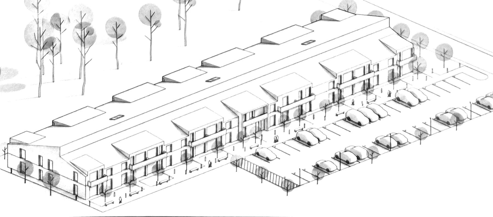
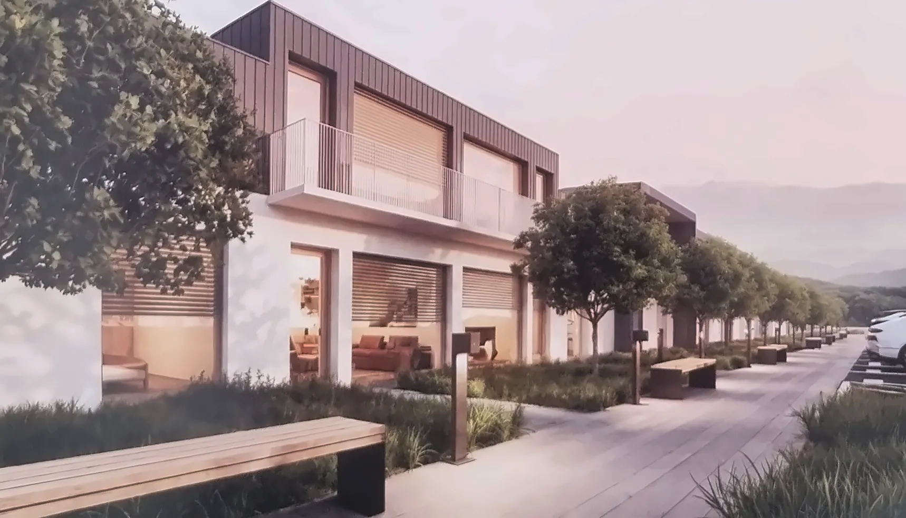
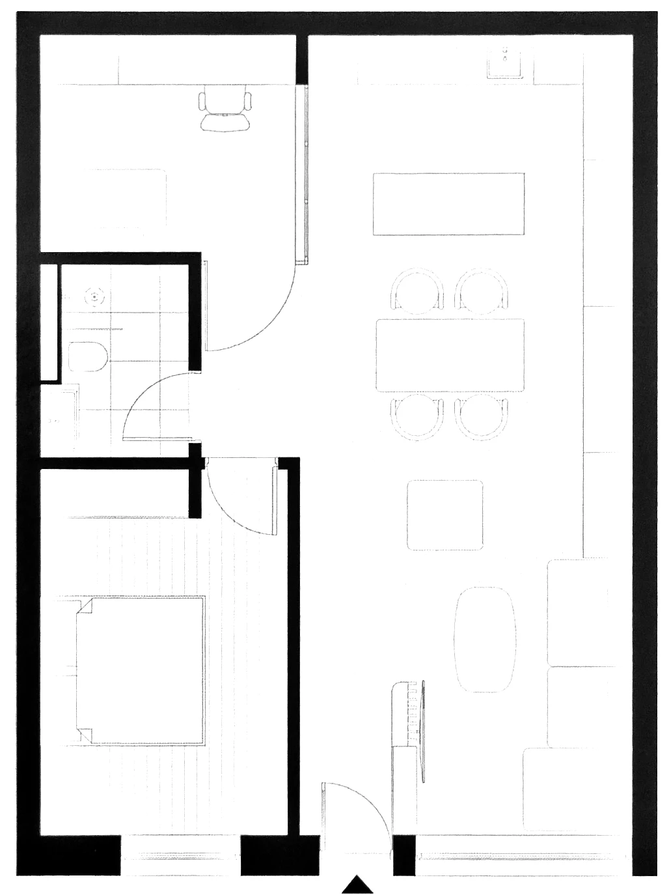
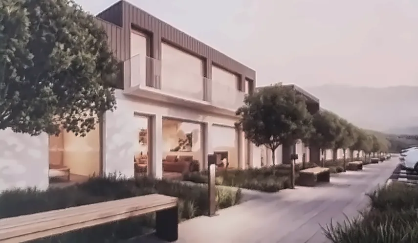

Ceuașu de Câmpie · Județul Mureș
Arcadian
Residence
Aproape de oraș, departe de aglomerație.
- până la Târgu Mureș
- 15min
- standard energetic
- nZEB
- spații verzi
- 40%
- regim de înălțime
- P+1E
A.01 — Locație
Naveta zilnică devine o formalitate, nu un compromis.
Arcadian Residence se află în Ceuașu de Câmpie, într-un cadru liniștit, ferit de forfota urbană, dar suficient de aproape de Târgu Mureș cât să nu renunți la locul de muncă, la școli sau la servicii.
O zonă rezidențială nouă, cu un singur nivel peste parter, cu grădini la parter și parcare dedicată pentru fiecare locuință.

A.02 — Fișă tehnică
Un confort care se simte, nu doar se promite.
Fiecare decizie tehnică pornește de aici: case eficiente energetic, bine izolate și ușor de întreținut, cu finisaje și instalații gândite pentru viața de zi cu zi.

| Eficiență energetică |
|
|---|---|
| Confort & utilități |
|
| Sistem constructiv |
|
| Fațadă & exterior |
|
| Spații comune |
|
A.03 — Apartamente
Două tipuri. Planuri reale, suprafețe la zecimală.

| Nr. | Încăpere | m² |
|---|---|---|
| Total utilă | ||

A.04 — Exterior
Parter alb, etaj în tablă fălțuită, grădina în față.
Camerele orientate spre sud au storuri integrate în arhitectura fațadei. Protecția solară nu se vede din exterior, așa că liniile clădirii rămân curate.

A.05 — Rezervare
Rezervă-ți apartamentul.
Echipa de vânzări te poartă printr-un tur virtual 3D al ansamblului: apartamentele disponibile, planurile personalizabile și răspunsuri directe la întrebările tale.
Sună pentru turul virtual 0769 296 668- Arhitectură & design interior
- Studio Holm · Inhabit Studio
- Amplasament
- Ceuașu de Câmpie, județul Mureș